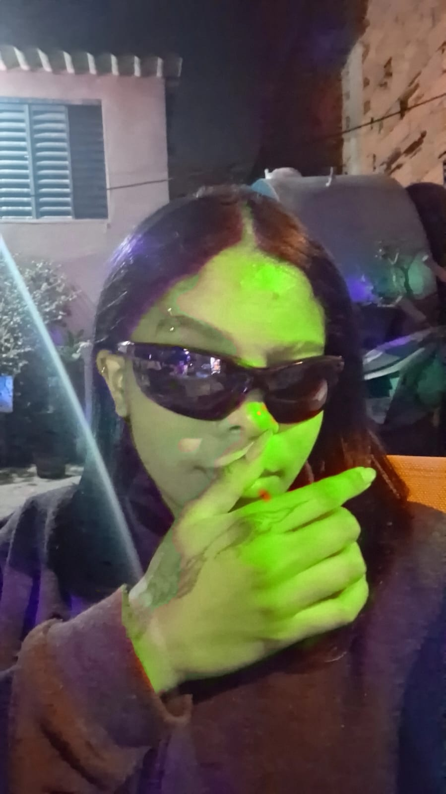
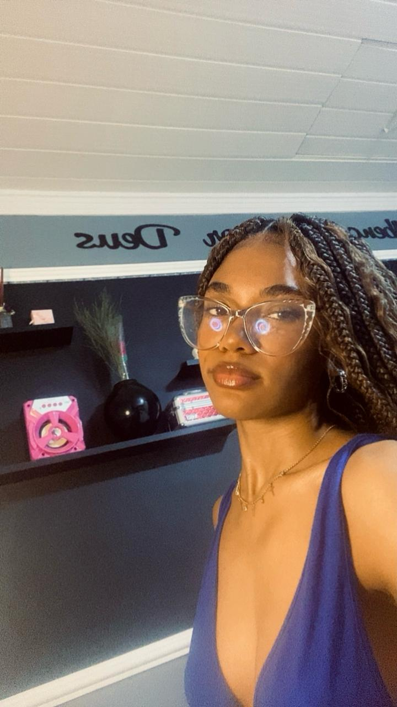

O setor de Bem-Estar promove a saúde física, emocional e social das pessoas. Oferece apoio emocional e psicológico, atividades esportivas e educativas sobre nutrição e bem-estar. Também proporciona oportunidades para o desenvolvimento pessoal e além disso, oferece apoio acadêmico, ajudando os jovens com a orientação para o sucesso de cada um.
Bem Estar
TI
O TI desenvolveu o site e sistemas seguros para divulgar casos e apoiar campanhas de conscientização sobre desaparecimentos.

Marketing
O marketing é um conjunto de táticas de mercado que auxiliam no crescimento da empresa. O marketing tem como objetivo descobrir quem é o seu cliente, conhecer melhor o seu público-alvo e criar estratégias, a fim de chamar sua atenção e conquistá-lo.

RH
O RH da empresa é responsável por contratar e desenvolver pessoas alinhadas com a missão de proteger vidas por meio da tecnologia.
Ele cuida da seleção, treinamentos, desempenho, bem-estar dos colaboradores e da parte administrativa, além de promover um ambiente saudável e motivador, garantindo que todos estejam engajados com os valores da empresa.
